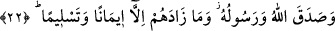

taallukunu kabûle istidâdlı düzgün bir kalıp (beden) olana kadar devam eder.
Düzgün kalıbın/bedenin ruh ile beraber olan durumunun misâli, mum ile mührün
nakşıdır. Mühür mumun üzerine konulduğu zaman, mum mührün bütün nakışlarını kabul
eder. İşte mükerrem kılınan ruh düzgün hale getirilmiş kalıba/bedene taalluk edince,
üsve/örnek olması dolayısıyla önde olmalarından ve geriye bırakılmalarından elde
ettiği bütün özelliklerini bedene emâneten bırakır.
İnsanın doğumundan ömrünün sonuna kadar üzerinde cereyan eden fiillerin, sözlerin,
ahlakın ve hallerin hepsi, Allâh’ın ruha tevdi ettiği özelliklerin eserlerindendir. Her
ruhun Rasûlullah (s.a.)’in ruhuna olan yakınlık ve uzaklığına göre üsve/örnek olma
konusundaki hâline uygun bir takım amelleri ve niyetleri vardır. Onlardan kurb
ehlinin/Hakk’a yakın olanların hâli, amellerinin sünnete muvafık olarak sırf Allah
Teâlâ’nın rızası için olmasıdır. Nitekim “...Allâh’a kavuşmayı umanlar için...”
buyurulmuştur. Kurb/Hakk’a yakınlık ve ihlasta onlardan aşağıda olanların hâli ise
amellerinin âhiret günü için, yâni cennet nîmetlerini elde etmek için olmasıdır. Nitekim
Allah Teâlâ: “…âhiret gününe kavuşmayı umanlar için…” buyurmuştur. Yâni Allâh’a
ve âhiret gününe kavuşmayı umanlar demektir. Sonra Allah Teâlâ bu makamlara nail
olmayı “Allâh’ı çok zikredenler için” buyurarak Allâh’ı çok zikretme şartına
bağlamıştır. Çünkü “Lâ ilahe illallah” zikrinde nefy ve isbât vardır. Bu ikisi seyr ilallah
ehli için iki ayaktır, tayr billah ehli için ise iki kanattır. Nefy ve isbât ile onlar, mecâzî
varlığın karanlıklarından hakîkî varlığın nuruna çıkarlar.” et-Te’vîlât’tan yapılan nakil
burada sona erdi.
22. Mü’minler ise, düşman birliklerini gördüklerinde: “İşte Allah ve Rasûlü’nün
bize vâdettiği! Allah ve Rasûlü doğru söylemiştir.” dediler. Bu (orduların gelişi),
onların ancak îmanlarını ve Allâh’a bağlılıklarını arttırdı.
“Mü’minler ise” Hendek günü Hz. Peygamber (a.s.) ve ashabıyla savaşmak üzere
gelen “düşman birliklerini gördüklerinde: “İşte” bu büyük imtihan “Allah”ın: “Yoksa
siz, sizden önce gelip geçenlerin başına gelenler size de gelmeden cennete
gireceğinizi mi sandınız? Yoksulluk ve sıkıntı onlara öylesine dokunmuş ve öyle
sarsılmışlardı ki, nihâyet Peygamber ve beraberindeki mü’minler: “Allâh’ın
yardımı ne zaman!” dediler.” (el-Bakara, 2/214) buyurarak “ve Rasûlü’nün:”
“Müttefik düşman ordularının size saldırmak üzere toplanmasıyla iş zorlaşacak.
Ancak sonuç sizin lehinize ve onların aleyhine olacaktır.”[190] ve “Müttefik düşman
orduları dokuz-on gün sonra sizin üzerinize yürüyecektir.”[191] buyurarak “bize